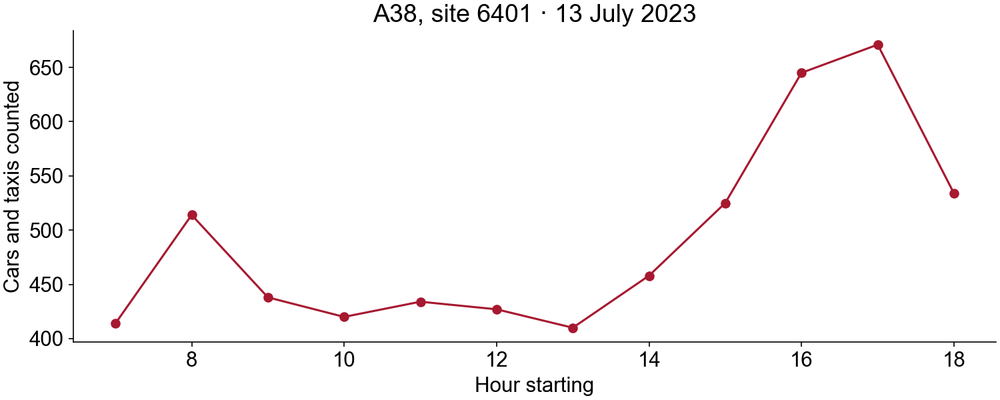
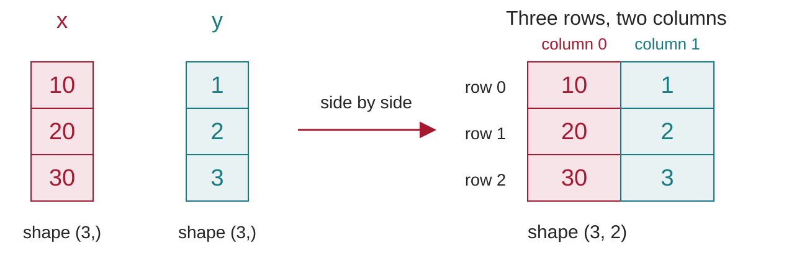
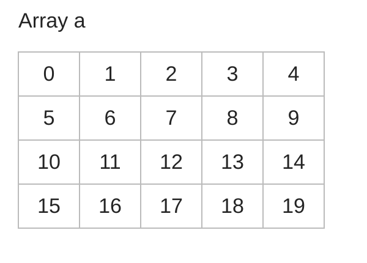
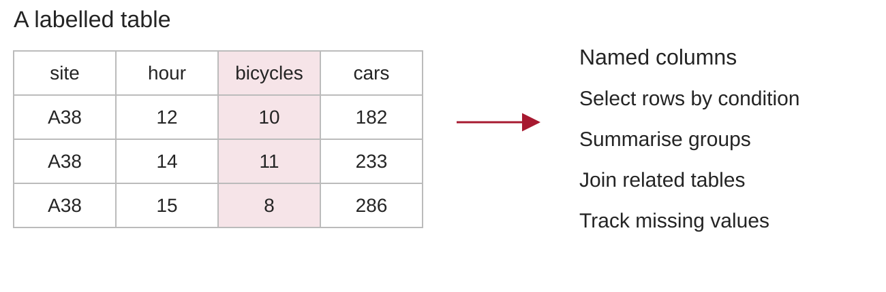
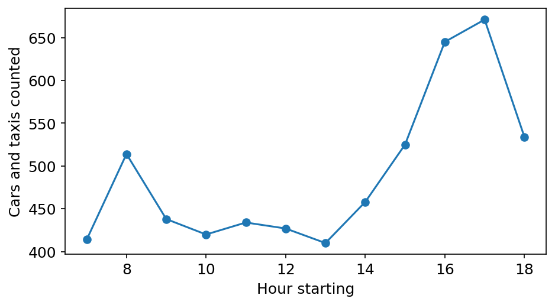
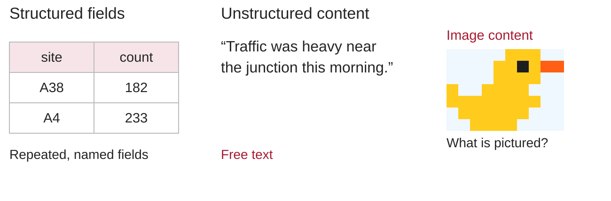
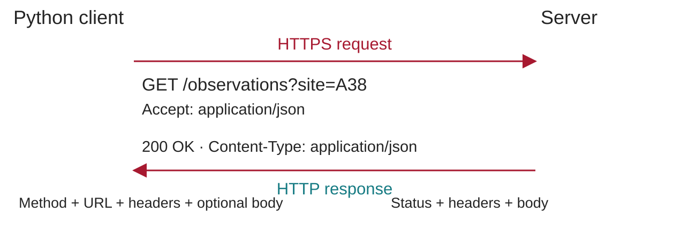
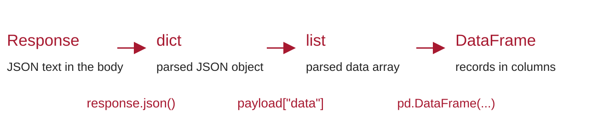

Week 8: Data types and sources
Software Development: Programming and Algorithms
Delivered by: Dr Joseph Aylett-Bullock
Last week
NumPy arrays

pandas tables and Matplotlib figures
Names, objects and memory
Arrays
values = np.array([10, 20, 30])alias = valuesalias[1] = 99
One-dimensional arrays as columns
A 1D array can supply one column of a table.

A 1D array has shape (3,)
Arrange arrays as columns or rows

Array axes

RGB[:, :, 0] selects the first colour channel at every pixel.
Two-dimensional slicing

a[1:3, 1:4]
Which values are selected?
What is the result's shape?
Slicing in NumPy
An integer index removes an axis. A length-one slice keeps it.
Matrix multiplication
Two multiplication operators
[[ 2 2] [ 0 12]]
[[ 2 7] [ 6 15]]
* multiplies corresponding values. @ takes row–column products.
Tutorial 7A: Exercise 6
Compute averages using a sliding window over an array.
Take the input [5, 2, 4, 6, 3, 1]. A sliding window of size 2 is applied. The current sum of the pair [5, 2] is 7. Continue iterating through the entire array, sliding the window by 1 for the next iteration.
What are the averages? Try different window sizes.
A sliding window
A window of two values moves one position at a time.
Width = 2. Predict the window and mean at each position.
Going through the motions
values = np.array([5, 2, 4, 6, 3, 1]) · width = 2 · averages = []
Width = 2. Predict the window and mean at each position.
for start in range(5):
stop = start + width
window = values[start:stop]
average = window.mean()
averages.append(float(average))
After an iteration: start = ?, stop = ?, window = ?, average = ?
DataFrames

Column names describe the fields. Each column has a data type.
Select rows and columns
| count_point_id | count_date | |
|---|---|---|
| 0 | 6401 | 2023-07-13 |
| 1 | 6401 | 2023-07-13 |
| 2 | 6401 | 2023-07-13 |
| cars | |
|---|---|
| 0 | 273 |
| 1 | 141 |
| 2 | 308 |
| count_point_id | hour | cars | |
|---|---|---|---|
| 2 | 6401 | 8 | 308 |
| 19 | 6401 | 16 | 363 |
| 20 | 6401 | 17 | 314 |
| 21 | 6401 | 17 | 357 |
| 24 | 8599 | 7 | 591 |
busy contains the rows that satisfy the condition.
Which chart?

Build a plot

Figure: whole canvas. Axes: plotting area.
Structured and unstructured data

The pixels form a NumPy array. Recognising the duck extracts meaning from the image.
Semi-structured data

Quantitative or qualitative?
Quantitative
Counts or measurements: how many or how much.
Qualitative
Categories or descriptions: what kind.
Which column does each example belong in?
- Road name
- Vehicle count
- NO₂ concentration
- Count-point ID: 6401
Discrete or continuous?
Discrete
Values occur in distinct steps.
Continuous
The underlying quantity varies over a continuum.
Which column does each example belong in?
- Vehicle count
- Journey duration
- Shoe size
- NO₂ concentration
Discretisation
Equal-width bins
Equal-count bins
Scales of measurement
| Scale | Example | What is meaningful? |
|---|---|---|
| Nominal | Count-point ID | Equality; category counts |
| Ordinal | Poor / fair / good | Order; gaps are unspecified |
| Interval | Calendar year | Differences; ratios are not meaningful |
| Ratio | Vehicle count; elapsed duration | Differences and ratios; meaningful zero |
Is averaging the numbers in this column useful?
Data acquisition
Reading a file
A CSV becomes a table. An image becomes an array.
Data sources

Choose an appropriate source for the questions you’re trying to answer
Getting the Bristol traffic data
Source
DfT traffic data
2023 surveys
Bristol
Documentation
site, date,
hour, direction
Retrieve + save
Raw response
{"data": [ … ]}Keep the original JSON.
Process
pandas DataFrame
hour,cars …,…
Select and check fields.
Use
Matplotlib
Read the documentation
| Check | In our traffic example |
|---|---|
| What does one record represent? | A site, date, hour and direction |
| Which fields and units? | Vehicle counts; coordinates in degrees |
| Which place and period? | Bristol, 2023; sampled survey days |
| How do we request a subset? | Filters and page size |
| How do we know we have everything? | Pagination metadata |
| What can we do with it? | Check access, licence and attribution |
Anatomy of a web API

An API defines how to request an operation and interpret its result.
GET and POST
GET retrieves the two existing observations. The stored rows stay unchanged.
POST submits a new observation: site A38, cars 286. The server adds row 3 before returning 201 Created.
POST
Python client
Submit a new observation.
Response received
cars = 286
Location: /observations/3
Server
Stored observations
| id | site | cars |
|---|---|---|
| 1 | A38 | 182 |
| 2 | A38 | 233 |
| 3 | A38 | 286 |
REST APIs
https://schemeexample.orghost/observationsresource path?site=A38queryA resource has a URL. Each request supplies the context the server needs.
| Method | Typical purpose |
|---|---|
| GET | Retrieve a representation |
| POST | Submit data; commonly create a resource |
| PUT / PATCH | Replace / partially modify a resource |
| DELETE | Remove a resource |
Three records, four representations
CSV
site,cars A38,182 A4,233 M32,286
JSON
[
{"site": "A38", "cars": 182},
{"site": "A4", "cars": 233},
{"site": "M32", "cars": 286}
]XML
<observations> <record site="A38" cars="182" /> <record site="A4" cars="233" /> <record site="M32" cars="286" /> </observations>
HTML
<table> <tr><td>A38</td><td>182</td></tr> <tr><td>A4</td><td>233</td></tr> <tr><td>M32</td><td>286</td></tr> </table>
The full request URL
import requests
import json
url = ('https://roadtraffic.dft.gov.uk/api/raw-counts'
'?filter[local_authority_id]=144&filter[year]=2023'
'&page[size]=2&fields=road_name,cars_and_taxis')
response = requests.get(url, timeout=20)
response.raise_for_status()
print(json.dumps(response.json()['data'], indent=2))[
{
"road_name": "A38",
"cars_and_taxis": 182
},
{
"road_name": "A38",
"cars_and_taxis": 233
}
]
Saved DfT preview · 9 November 2026
Build the URL with an f-string
base = 'https://roadtraffic.dft.gov.uk/api/raw-counts'
authority, year = 144, 2023
url = (f'{base}?filter[local_authority_id]={authority}'
f'&filter[year]={year}&page[size]=2'
'&fields=road_name,cars_and_taxis')
response = requests.get(url, timeout=20)
response.raise_for_status()
print(json.dumps(response.json()['data'], indent=2))[
{
"road_name": "A38",
"cars_and_taxis": 182
},
{
"road_name": "A38",
"cars_and_taxis": 233
}
]
Saved DfT preview · 9 November 2026
Build the query with params
base = 'https://roadtraffic.dft.gov.uk/api/raw-counts'
params = {'filter[local_authority_id]': 144,
'filter[year]': 2023, 'page[size]': 2,
'fields': 'road_name,cars_and_taxis'}
response = requests.get(base, params=params, timeout=20)
response.raise_for_status()
print(json.dumps(response.json()['data'], indent=2))[
{
"road_name": "A38",
"cars_and_taxis": 182
},
{
"road_name": "A38",
"cars_and_taxis": 233
}
]
Saved DfT preview · 9 November 2026
Inspect and save the response
application/json
{"current_page":1,"data":[{"road_name":"A38","cars_and_taxis":182},{"road_name":"A38","cars_and_taxis":233}],"first_page_url":"https:\/\/roadtraffic.dft.gov.uk\/api\/raw-counts?filter%5Blocal_authorit
With open
Save the original response before changing its contents.
Parse the response
JSON is a text format. response.json() parses that text into Python objects.
We call the parsed response body payload. It is an ordinary variable name.

A JSON object becomes a Python dict. A JSON array becomes a list.
Inspect the parsed objects
['current_page', 'data', 'first_page_url', 'from']
[{'road_name': 'A38', 'cars_and_taxis': 182}, {'road_name': 'A38', 'cars_and_taxis': 233}]
2
| road_name | cars_and_taxis | |
|---|---|---|
| 0 | A38 | 182 |
| 1 | A38 | 233 |
Check for more pages
- Read the documentation: look for
page,limit,offsetorcursorparameters. - Inspect the response: pagination may appear in JSON metadata or an HTTP
Linkheader.
dict_keys(['current_page', 'data', 'first_page_url', 'from', 'last_page', 'last_page_url', 'links', 'next_page_url', 'path', 'per_page', 'prev_page_url', 'to', 'total'])
https://roadtraffic.dft.gov.uk/api/raw-counts?filter%5Blocal_authority_id%5D=144&filter%5Byear%5D=2023&page%5Bsize%5D=2&fields=road_name%2Ccars_and_taxis&page%5Bnumber%5D=2
None
Follow the documented next-page link or cursor until there are no more pages.
Our two-record preview has more pages. The complete saved query contains
936 records and fits on one page when page[size] = 10000.
Following pagination links
next_page_url = NoneProcess the records
road_name object cars int64 dtype: object
road_name 0 cars 0 dtype: int64
Check fields, types, units and missing values before summarising.
Data on a webpage

A download or API is available
Use its documented fields and access method.
The required values are in HTML
Inspect the document and extract the relevant elements.
Check access conditions and request rates before retrieving pages.
HTML elements

Tags and attributes help us select the values we need.
Extract values from HTML
from bs4 import BeautifulSoup
page = requests.get('https://books.toscrape.com/', timeout=20)
page.raise_for_status()
page.encoding = 'utf-8'
soup = BeautifulSoup(page.text, 'html.parser')
prices = soup.select('article.product_pod .price_color')
print([price.get_text(strip=True) for price in prices[:3]])['£51.77', '£53.74', '£50.10']
Saved practice page · 8 November 2026
raise_for_status() stops on an HTTP error such as 404 or 500.
A successful 200 response continues to the next line.
Process and use the data
NumPy arrays
Slice and transform
numerical data.
pandas DataFrames
| site | hour | cars |
|---|---|---|
| A38 | 12 | 182 |
| A38 | 14 | 233 |
Inspect, clean and select.
Group and combine tables.
Matplotlib graphs
Explore patterns.
Communicate results.
Later lectures will explore how to use Python for data analysis.
Questions
- Why does a width-three window over six values produce four complete windows?
- What is wrong with averaging count-point IDs?
- How does a
Responsediffer frompayload['data']? - What would you check before scraping a webpage?
Reference material
Worked examples and documentation
Reference: names and data buffers
| Object | Storage and behaviour |
|---|---|
| String | Immutable text; methods such as upper() return a string |
| List | Mutable sequence of references to Python objects |
| Numeric NumPy array | Shape and dtype describe a typed data buffer |
| Basic array slice | Usually a separate array object sharing the original buffer |
| Array copy | Independent data buffer |
Reference: windows and inspection
Reference: DataFrame operations
# Inspect missing entries before deciding what they mean.
print(traffic.isna().sum())
# Group and combine directions within each observed hour.
site_hour = traffic.groupby(
['count_point_id', 'count_date', 'hour'], as_index=False
)[['bicycles', 'cars']].sum()
# Filter rows; select named columns.
selected = site_hour.loc[site_hour['bicycles'] >= 30,
['count_point_id', 'bicycles']]
print(selected.head())count_point_id 0
count_date 0
hour 0
..
vans 0
lorries 0
motor_vehicles 0
Length: 10, dtype: int64
| count_point_id | bicycles | |
|---|---|---|
| 0 | 6401 | 51 |
| 1 | 6401 | 54 |
| 9 | 6401 | 41 |
| 10 | 6401 | 57 |
| 11 | 6401 | 47 |
groupby defines groups; a summary such as sum produces the result.
Reference: plotting methods
| Question | Matplotlib method |
|---|---|
| How does a quantity change with x? | ax.plot(x, y) |
| How are two quantities related? | ax.scatter(x, y) |
| What is the distribution? | ax.hist(values, bins=15) |
| How do categories compare? | ax.bar(labels, values) |
| Which categories rank highest? | ax.barh(labels, values) |
| What are the shares of a defined total? | ax.pie(values, labels=labels) |
| What does an image array contain? | ax.imshow(RGB) |
fig, ax = plt.subplots() creates a Figure and an Axes. Label units.
Reference: classification practice
| Example | Your classification |
|---|---|
| Shoe brand; letter grade; jersey number | |
| Number correct on an exam | |
| Number of cows | |
| Walking duration; volume of milk | |
| Jersey number | |
| Food ranking: poor / fair / good | |
| Calendar year; Celsius temperature | |
| Elapsed marathon duration |
Reference: binning and representative values
Sorted values: 10, 15, 25, 34, 44, 48, 55, 59, 64, 69, 88, 94
| Equal-count group | Mean | Median | Observed endpoints |
|---|---|---|---|
| 10, 15, 25 | 16.67 | 15 | 10, 25 |
| 34, 44, 48 | 42 | 44 | 34, 48 |
| 55, 59, 64 | 59.33 | 59 | 55, 64 |
| 69, 88, 94 | 83.67 | 88 | 69, 94 |
Replace values with the mean, median or nearest endpoint to smooth within a bin.
For [10, 15, 25], nearest-endpoint replacement gives [10, 10, 25].
Reference: extracting fields from content
| Task or tool | Role |
|---|---|
| Text mining / NLP | Extract language features or entities |
| Information retrieval | Find and rank relevant content |
| MongoDB | Document database |
| Neo4j | Graph database |
| HBase | Wide-column database |
| Hadoop | Distributed storage/processing ecosystem |
An email can combine structured headers with free-text content.
Reference: formats and parsers
| Representation | Read with |
|---|---|
| CSV file or stream | pd.read_csv(...) or Python csv |
| JSON response body | response.json() |
| JSON text / file | json.loads(text) / json.load(file) |
| XML | An XML parser, e.g. xml.etree.ElementTree |
| HTML | An HTML parser, e.g. BeautifulSoup |
| XHTML | HTML expressed using XML syntax |
| Shapefile / RVT | Domain-specific geospatial / building-model tools |
Document the schema, units and version of a custom format.
Reference: REST and failures
REST describes architectural constraints: client/server separation, stateless interactions, caching, a uniform interface and layers; code-on-demand is optional.
| Situation | What to inspect |
|---|---|
| Timeout or connection failure | Network/service availability; catch request exceptions |
| Non-success HTTP status | Status and error body; raise_for_status() |
| Unexpected content or schema | Content type, body preview, keys and types |
| Only some records returned | Pagination and documented totals |
| Too many requests | Published limits; retry guidance |
Reference: scrape, extract and store
# Inspect links and resolve relative destinations when needed.
from urllib.parse import urljoin
for anchor in soup.find_all('a')[:3]:
href = anchor.get('href')
if href:
print(urljoin(page.url, href))
values = [float(p.get_text(strip=True).removeprefix('£'))
for p in prices]
pd.DataFrame({'price_gbp': values}).to_csv(
'output/scraped-prices.csv', index=False)https://books.toscrape.com/index.html
https://books.toscrape.com/index.html
https://books.toscrape.com/catalogue/category/books_1/index.html
BeautifulSoup parses documents. Scrapy organises crawls. Selenium automates a browser.
Reference: sources and reading
- DfT road traffic data: downloads and guidance
- Requests quickstart
- BeautifulSoup documentation
- Python for Data Analysis: data loading
- REST architectural constraints
Saved traffic response: 31 October 2026. Observations: 2023.
Next session: exploratory data analysis, appropriate summaries and plots, outliers.
bristol.ac.uk